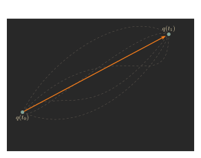
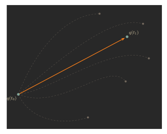

Mechanics III: the Hamiltonian
September 12, 2026
Newton gave the first formulation of mechanics, in the 17th century. For him, force was the most basic concept, and a physical system evolves according to the equation \(F=ma\).
In 1788, Lagrange introduced a more abstract framework for mechanics. His approach was based on the Lagrangian, and a physical system evolves to minimize the action integral \[ S=\int_{t_0}^{t_1}L\big(x(t),v(t),t\big)dt. \] A big advantage of Lagrange's approach was that it enabled us to prove Noether's theorem, giving us a tool to find various conservation laws.
In 1833, Hamilton introduced yet another approach to classical mechanics, which is even more abstract than Lagrange's approach. For him, energy is the most basic concept.
What is the point of this fancy abstract formalism for mechanics? It has several advantages:
- It gives a clearer view on conserved quantities.
- It allows for more general changes of coordinates, which can simplify our problems. For example, position and momentum play symmetric roles in this theory.
- It is a bridge between classical mechanics and quantum mechanics. We hope to expand on this point in a future article.
Least action principle: yet again
Let's quickly review Lagrangian mechanics. We start with the a certain function, known as the Lagrangian, \[ L(q_1,\dots,q_n,\dot q_1,\dots,\dot q_n,t), \] which depends on coordinates \(q_1,\dots,q_n\), the generalized velocity \(\dot q_1,\dots,\dot q_n\), and time \(t\). Throughout the article, to simplify notation we will often simply write \[ L(q,\dot q,t), \] where \(q\) should be understood to be shorthand for \(q_1,\dots,q_n\). In our previous article we took \(q\) to be the usual cartesian coordinate \(x\), so \(\dot q=v\) was velocity. But we could have taken \(q\) to be anything; at the end of the article we thought about the pendulum and used \(q=\theta\) the angle.Given a Lagrangian \(L(q,\dot q,t)\), the action of a path \(q(t)\) is \[ S=\int_{t_0}^{t_1}L\big(q(t),\dot q(t),t\big)dt. \] We want to find the path \(q(t)\) minimizing the action \(S\), given \(q(t_0)\) and \(q(t_1)\) are fixed. So let us imagine perturbing the path to \(q(t)+\delta q(t)\), where \(\delta q\) is some small function such that \(\delta q(t_0)=\delta q(t_1)=0\) to make sure the endpoints don't move. Then the time-derivative \(\dot q(t)\) of \(q(t)\) changes to \(\dot q(t)+\delta\dot q(t)\), where \(\delta\dot q(t)\) denotes the derivative of \(\delta q(t)\).
Then, the action for the path \(q+\delta q\) is \[ S=\int_{t_0}^{t_1}L\big(q(t)+\delta q(t),\dot q(t)+\delta\dot q(t),t\big)dt. \] We approximated the integrand as \[ L\big(q(t)+\delta q(t),\dot q(t)+\delta\dot q(t),t\big)\approx L\big(q(t),\dot q(t),t\big)+\frac{\partial L}{\partial q}\delta q(t)+\frac{\partial L}{\partial \dot q}\delta\dot q(t). \] Therefore, the perturbation \(\delta q\) changes the action by \[ \delta S=\int_{t_0}^{t_1}\bigg(\frac{\partial L}{\partial q}\delta q(t)+\frac{\partial L}{\partial \dot q}\delta\dot q(t)\bigg)dt. \] To minimize the integral, we want \(\delta S=0\). By integration by parts, \[ \int_{t_0}^{t_1}\frac{\partial L}{\partial \dot q}\delta\dot q(t)dt=\bigg[\frac{\partial L}{\partial \dot q}\delta q(t)\bigg]_{t_0}^{t_1}-\int_{t_0}^{t_1}\frac d{dt}\frac{\partial L}{\partial \dot q}\delta q(t)dt. \] Moreover, since \(\delta q(t_0)=\delta q(t_1)=0\) the first term simply vanishes, and so \[ \int_{t_0}^{t_1}\frac{\partial L}{\partial \dot q}\delta\dot q(t)dt=-\int_{t_0}^{t_1}\frac d{dt}\frac{\partial L}{\partial \dot q}\delta q(t)dt. \] Therefore \[ \delta S=\int_{t_0}^{t_1}\frac{\partial L}{\partial q}\delta q(t)dt+\int_{t_0}^{t_1}\frac{\partial L}{\partial \dot q}\delta\dot q(t)dt=\int_{t_0}^{t_1}\bigg(\frac{\partial L}{\partial q}-\frac d{dt}\frac{\partial L}{\partial \dot q}\bigg)\delta q(t)dt. \] For this quantity to be 0 for all small perturbations \(\delta q\), we need \[ \frac{\partial L}{\partial q}-\frac d{dt}\frac{\partial L}{\partial \dot q}=0. \] This is the Euler-Lagrange equation!
Generalized coordinates
Let us introduce some terminology. We call \(q_i\) the generalized coordinate, and \(\dot q_i\) the generalized velocity. We call the derivative \(p_i=\frac{\partial L}{\partial\dot q_i}\) the generalized momentum, and the derivative \(F_i=\frac{\partial L}{\partial q_i}\) the generalized force. Then the Euler-Lagrange equation is non other than\[F_i=\frac{dp_i}{dt}.\] As we saw in our previous article, when \(q_i=x_i\) are the usual cartesian coordinates, the momentum \(p_i\) and force \(F_i\) are the usual notions, and \(F_i=\frac{dp_i}{dt}\) is Newton's equation.
In other words, we can view the Euler-Lagrange equation as Newton's equation for general coordinates.
Predicting where particles go
In the previous paragraph, we minimized the action \(S\) among all ways for a physical system can develop from the starting position \(q(t_0)\) to the end position \(q(t_1)\).
Let us now modify our problem, so we only know where the starting position \(q(t_0)\) is, not where the end position \(q(t_1)\) will be.
This is closer to what we really want to do; knowing where the particle starts off, we want to predict where the particle will end up. Let's compute how the action \(S\) changes depending on where the end point \(q(t_1)\) is.Our basic approach is the same; to minimize the action integral \(S\), we perturb the path \(q(t)\) to another path \(q(t)+\delta q(t)\) where \(\delta q(t)\) is a small function. But now, we will only assume \(\delta q(t_0)=0\), i.e., that the starting point does not move.
The same derivation as before goes through, and \[ \delta S=\int_{t_0}^{t_1}\bigg(\frac{\partial L}{\partial q}\delta q(t)+\frac{\partial L}{\partial \dot q}\delta\dot q(t)\bigg)dt. \] The difference now is that in our integration by parts \[ \int_{t_0}^{t_1}\frac{\partial L}{\partial \dot q}\delta\dot q(t)dt=\bigg[\frac{\partial L}{\partial \dot q}\delta q(t)\bigg]_{t_0}^{t_1}-\int_{t_0}^{t_1}\frac d{dt}\frac{\partial L}{\partial \dot q}\delta q(t)dt, \] the first term need not vanish anymore. Instead, we see \[ \int_{t_0}^{t_1}\frac{\partial L}{\partial \dot q}\delta\dot q(t)dt=\frac{\partial L}{\partial \dot q}\big(q(t_1),\dot q(t_1),t_1\big)\delta q(t_1)-\int_{t_0}^{t_1}\frac d{dt}\frac{\partial L}{\partial \dot q}\delta q(t)dt. \] The extra term \(\frac{\partial L}{\partial\dot q}(t_1)\delta q(t_1)\) follows along the entire derivation, and so \[ \delta S=\frac{\partial L}{\partial \dot q}\big(q(t_1),\dot q(t_1),t_1\big)\delta q(t_1)+\int_{t_0}^{t_1}\bigg(\frac{\partial L}{\partial q}-\frac d{dt}\frac{\partial L}{\partial \dot q}\bigg)\delta q(t)dt. \] When \(q(t)\) satisfies the Euler-Lagrange equation the integral vanishes and \[ \delta S=p(t_1)\delta q(t_1). \] Here, \(p=\frac{\partial L}{\partial\dot q}\) denotes the generalized momentum. With \(n\) degrees of freedom, we similarly have \[ \delta S=\sum_{i=1}^np_i(t_1)\delta q_i(t_1), \] where \(p_i=\frac{\partial L}{\partial\dot q_i}\).
This means, if we consider the action \(S\) as a function of the end position \(q_i=q_i(t_1)\), then \[ \frac{\partial S}{\partial q_i}=p_i. \]
The action as a function of both time and coordinates
We could also consider \(S\) as a function of both the end position \(q_i=q_i(t_1)\) and time \(t=t_1\). That means, given a time \(t_1\) and positions \(q_i\), we solve for the Euler-Lagrange equations with end points \(q_i(t_0)\) and \(q_i(t_1)=q_i\) and compute the action \(S\). Let us compute \(\frac{\partial S}{\partial t}\).
By the multivariable chain rule, the time-derivative of \(S\) is \[ \frac{dS}{dt}=\sum_{i=1}^n\frac{\partial S}{\partial q_i}\dot q_i+\frac{\partial S}{\partial t}. \] However, since \(S\) was defined to be the integral of the Lagrangian, \(\frac{dS}{dt}=L\), and as we saw above, \(\frac{\partial S}{\partial q_i}=p_i\). Therefore, \[ L=\sum_{i=1}^np_i\dot q_i+\frac{\partial S}{\partial t}, \] or, \[ \frac{\partial S}{\partial t}=L-\sum_{i=1}^np_i\dot q_i. \] We call the quantity \[ -\frac{\partial S}{\partial t}=\sum_{i=1}^np_i\dot q_i-L \] the Hamiltonian, and denote it by \(H\). As we explained a couple weeks ago, \(H\) is the total energy in the system, and is conserved when the Lagrangian \(L\) is time-independent.
Our goal is to take Lagrangian mechanics--formulated in terms of \(L\), \(q_i\), and \(\dot q_i\)--and reformulate it in terms of \(H\), \(q_i\), and \(p_i\). Correspondingly, let us view \(H=H(q,p,t)\) as a function of \(q_i\), \(p_i\), and \(t\), instead of as a function of \(q_i\), \(\dot q_i\), and \(t\).Euler-Lagrange equations... but with no Lagrangians
We now understand the derivatives of \(S\) with respect to \(q_i\) and \(t\). Let's use the language of differential forms to combine all this information into one simple formula: \[ dS=\sum_{i=1}^n\frac{\partial S}{\partial q_i}dq_i+\frac{\partial S}{\partial t}dt=\sum_{i=1}^np_idq_i-Hdt. \]Now, by the fundamental theorem of calculus, \[ S=\int_\gamma\bigg(\sum_{i=1}^np_idq_i-Hdt\bigg). \] This is a path integral, along the path \(\gamma\) from \(t_0\) to \(t_1\) is the path the particle takes: formally, \(\gamma\colon[t_0,t_1]\to\mathbb R^n\times\mathbb R\) is defined by \(\gamma(t)=(q_i(t),t)\).
Of course, by definition, this equation simply says \[ S=\int_{t_0}^{t_1}\bigg(\sum_{i=1}^np_i(t)\frac d{dt}q_i(t)-H(q(t),p(t),t)\bigg)dt, \] which is nothing but the definition of the action integral plus the identity \(H=\sum_{i=1}^np_i\dot q_i-L\). However, this formulation allows us to consider a more general variational principle.